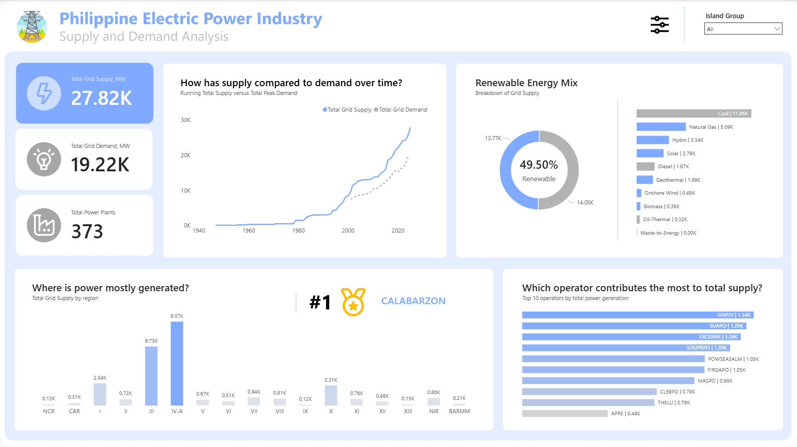

A comprehensive overview of the Philippine electric power industry,
highlighting supply and demand trends, renewable energy mix, and
regional generation performance.
Overview
This Power BI dashboard delivers a comprehensive, interactive analysis of the Philippine electric power grid — tracking 27.82K MW of total supply against 19.22K MW of peak demand across 373 power plants nationwide, spanning Luzon, Visayas, and Mindanao. Built as a live, filterable public intelligence tool, it visualizes eight decades of supply-demand growth, breaks down the national energy mix across ten fuel types, and ranks regional and operator-level generation contributions. The dashboard directly addresses the everyday question Filipinos face during brownout season: what is actually happening to the grid?

Business Question
Rotating brownouts, Yellow Alerts, and Red Alerts affect millions of Filipino households and businesses — yet the underlying supply-demand dynamics that trigger these events are rarely communicated in an accessible, data-driven way. Energy policymakers, grid operators, business continuity planners, and ordinary consumers lack a unified view of where power is coming from, which regions are most vulnerable, and how close the grid is to reserve margin thresholds at any given time. With the Philippines targeting 35% renewable energy by 2030 and biomass/solar variability increasingly affecting grid stability — particularly during evening peak demand and the rainy season — real-time supply intelligence is no longer optional. This dashboard was built to close that visibility gap for everyone from NGCP analysts to households planning contingencies.
Key Insights & Features
- Core KPIs Tracked
-
Total Grid Supply (27.82K MW), Total Grid Demand (19.22K MW), and Total Power Plants (373) — with Island Group filtering enabling instant segmentation into Luzon, Visayas, and Mindanao grid views for region-specific analysis.
- 80-Year Supply vs. Demand Trend (1940–2024+)
-
A dual-line time-series chart tracks the historical growth of total grid supply versus total peak demand from 1940 to present — with a dotted forecast line extending into 2025+, visualizing how accelerating demand growth is narrowing the national supply buffer and increasing grid vulnerability.
- Renewable Energy Mix Breakdown
-
A donut chart and ranked bar chart reveal that the Philippines sits at 49.50% renewable capacity — with Coal still leading at 11.86K MW, followed by Natural Gas (5.09K), Hydro (3.34K), and Solar (2.79K) — making the energy transition progress and remaining fossil fuel dependence immediately visible.
- Regional Generation Ranking
-
A column chart maps total grid supply across all 17 administrative regions — CALABARZON (Region IV-A) leading at 9.57K MW, with NCR contributing only 0.13K MW despite being the highest-demand region — exposing the geographic mismatch between where power is generated and where it is consumed.
- Top 10 Operator Rankings
-
A horizontal bar chart identifies the ten highest-generating power plant operators (led by GNPDI at 1.34K MW) — providing transparency into market concentration, operator dependency risk, and the private sector players most critical to grid stability.
- Analytical Approach
-
Descriptive (current supply-demand state and energy mix), diagnostic (regional generation gaps and fuel-source vulnerability), and trend-based (80-year historical growth with forward projection) — delivered through an interactive Island Group slicer that makes the entire dashboard filterable by grid zone.

| Tool | Usage |
|---|---|
| Power BI | Dashboard design, report pages, interactivity |
| DAX | KPI calculations, YoY/MoM comparisons, margin metrics |
| Power Query (M) | Data transformation and modeling |
| Excel | Source data preparation |
| Data Modeling | Star schema with fact and dimension tables |
Impact & Value
This dashboard turns one of the Philippines' most pressing infrastructure challenges — energy supply reliability — into a publicly accessible, data-driven conversation. For grid operators and energy analysts, it provides a single-view diagnostic of national supply-demand balance and operator-level risk concentration. For businesses managing continuity plans around brownouts, it surfaces which island groups and regions are most exposed to reserve margin pressure. For policymakers, the 49.50% renewable share metric and Coal-dominance breakdown provide an honest baseline for tracking progress toward the 2030 renewable energy target.
Let's Work Together!
I help businesses turn raw data into actionable insights, dashboards, and data-driven strategies.
- Data Analysis & Visualization
- Power BI & Dashboard Development
- Business Intelligence Solutions
Phone
+63 956-175-9646Address
Bacolod City, Negros OccidentalPhilippines